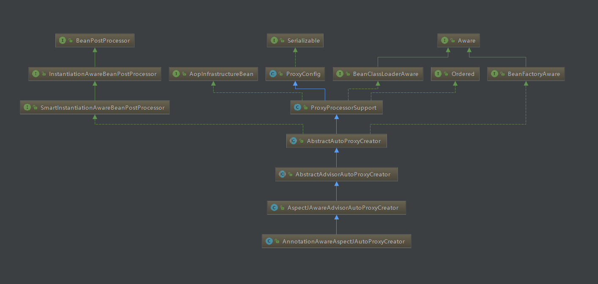

一:AOP
1.1)AOP
AOP（Aspect Oriented Programming），即面向切面编程，可以说是OOP（Object Oriented Programming，面向对象编程）的补充和完善。OOP引入封装、继承、多态等概念来建立一种对象层次结构，用于模拟公共行为的一个集合。不过OOP允许开发者定义纵向的关系，但并不适合定义横向的关系，例如日志功能。日志代码往往横向地散布在所有对象层次中，而与它对应的对象的核心功能毫无关系对于其他类型的代码，如安全性、异常处理和透明的持续性也都是如此，这种散布在各处的无关的代码被称为横切（cross cutting），在OOP设计中，它导致了大量代码的重复，而不利于各个模块的重用。
AOP技术恰恰相反，它利用一种称为"横切"的技术，剖解开封装的对象内部，并将那些影响了多个类的公共行为封装到一个可重用模块，并将其命名为"Aspect"，即切面。所谓"切面"，简单说就是那些与业务无关，却为业务模块所共同调用的逻辑或责任封装起来，便于减少系统的重复代码，降低模块之间的耦合度，并有利于未来的可操作性和可维护性。
使用"横切"技术，AOP把软件系统分为两个部分：核心关注点和横切关注点。业务处理的主要流程是核心关注点，与之关系不大的部分是横切关注点。横切关注点的一个特点是，他们经常发生在核心关注点的多处，而各处基本相似，比如权限认证、日志、事物。AOP的作用在于分离系统中的各种关注点，将核心关注点和横切关注点分离开来。
1.2)基本概念
AOP核心概念
1、横切关注点(对哪些方法进行切入)
对哪些方法进行拦截，拦截后怎么处理，这些关注点称之为横切关注点
2、切面（aspect,把原来糅杂在业务逻辑代码中的非业务代码抽取出来，把功能相同的放在一个类中形成一个切面）
类是对物体特征的抽象，切面就是对横切关注点的抽象
3、连接点（joinpoint）（需要切入的点）
被拦截到的点，因为Spring只支持方法类型的连接点，所以在Spring中连接点指的就是被拦截到的方法，实际上连接点还可以是字段或者构造器
4、切入点（pointcut）
对连接点进行拦截的定义
5、通知（advice）
所谓通知指的就是指拦截到连接点之后要执行的代码，通知分为前置、后置、异常、最终、环绕通知五类
6、目标对象
代理的目标对象
7、织入（weave）
将切面应用到目标对象并导致代理对象创建的过程
8、引入（introduction）
在不修改代码的前提下，引入可以在运行期为类动态地添加一些方法或字段
1.3）简单案例:
public interface Calculate {
/**
* 加法
* @param numA
* @param numB
* @return
*/
int add(int numA,int numB);
/**
* 减法
* @param numA
* @param numB
* @return
*/
int reduce(int numA,int numB);
/**
* 除法
* @param numA
* @param numB
* @return
*/
int div(int numA,int numB);
/**
* 乘法
* @param numA
* @param numB
* @return
*/
int multi(int numA,int numB);
}
=====================实现类
public class TulingCalculate implements Calculate {
public int add(int numA, int numB) {
return numA+numB;
}
public int reduce(int numA, int numB) {
return numA-numB;
}
public int div(int numA, int numB) {
return numA/numB;
}
public int multi(int numA, int numB) {
return numA*numB;
}
}
=====================切面类=====================
@Aspect
public class TulingLogAspect {
@Pointcut("execution(* com.tuling.TulingCalculate.*(..))")
public void pointCut(){};
@Before(value = "pointCut()")
public void methodBefore(JoinPoint joinPoint){
String methodName = joinPoint.getSignature().getName();
System.out.println("执行目标方法【"+methodName+"】之前执行<前置通知>,入参"+ Arrays.asList(joinPoint.getArgs()));
}
@After(value = "pointCut()")
public void methodAfter(JoinPoint joinPoint) {
String methodName = joinPoint.getSignature().getName();
System.out.println("执行目标方法【"+methodName+"】之前执行<后置通知>,入参"+Arrays.asList(joinPoint.getArgs()));
}
@AfterReturning(value = "pointCut()")
public void methodReturning(JoinPoint joinPoint ) {
String methodName = joinPoint.getSignature().getName();
System.out.println("执行目标方法【"+methodName+"】之前执行<返回通知>,入参"+Arrays.asList(joinPoint.getArgs()));
}
@AfterThrowing(value = "pointCut()")
public void methodAfterThrowing(JoinPoint joinPoint) {
String methodName = joinPoint.getSignature().getName();
System.out.println("执行目标方法【"+methodName+"】之前执行<异常通知>,入参"+Arrays.asList(joinPoint.getArgs()));
}
}
===========================配置类=============
@Configuration
@EnableAspectJAutoProxy
public class MainConfig {
@Bean
public Calculate calculate() {
return new TulingCalculate();
}
@Bean
public TulingLogAspect tulingLogAspect() {
return new TulingLogAspect();
}
}
2）我们看到在我们配置类上加入了@EnableAspectJAutoProxy这个东东？我们着重来分析一下这个东东给我容器中添加了什么组件？
2.1)我们发现@EnableAspectJAutoProxy上标注了一个@Import注解，通过前面的学习我们知道@Import可以给我们容器中添加组件
@Target(ElementType.TYPE)
@Retention(RetentionPolicy.RUNTIME)
@Documented
@Import(AspectJAutoProxyRegistrar.class)
public @interface EnableAspectJAutoProxy {2.2)所有我们来分析AspectJAutoProxyRegistrar类是用来干什么的？
经过跟踪源代码我们发现,AspectJAutoProxyRegistrar实现了ImportBeanDefinitionRegistrar接口，我们以前学习过
凡是实现了ImportBeanDefinitionRegistrar可以给我们容器中添加bean定义信息
作用:往容器中注册了一个名称叫org.springframework.aop.config.internalAutoProxyCreator
类型为AnnotationAwareAspectJAutoProxyCreator 注解的apsectj自动代理创建器
class AspectJAutoProxyRegistrar implements ImportBeanDefinitionRegistrar {
@Override
public void registerBeanDefinitions(AnnotationMetadata importingClassMetadata, BeanDefinitionRegistry registry) {
//往容器中注册对应的 aspectj注解自动代理创建器
AopConfigUtils.registerAspectJAnnotationAutoProxyCreatorIfNecessary(registry);
AnnotationAttributes enableAspectJAutoProxy =
AnnotationConfigUtils.attributesFor(importingClassMetadata, EnableAspectJAutoProxy.class);
if (enableAspectJAutoProxy.getBoolean("proxyTargetClass")) {
AopConfigUtils.forceAutoProxyCreatorToUseClassProxying(registry);
}
if (enableAspectJAutoProxy.getBoolean("exposeProxy")) {
AopConfigUtils.forceAutoProxyCreatorToExposeProxy(registry);
}
}
}
======================AopConfigUtils.registerAspectJAnnotationAutoProxyCreatorIfNecessary(registry);======================
public static BeanDefinition registerAspectJAnnotationAutoProxyCreatorIfNecessary(BeanDefinitionRegistry registry) {
return registerAspectJAnnotationAutoProxyCreatorIfNecessary(registry, null);
}
//注册一个AnnotationAwareAspectJAutoProxyCreator（注解适配的切面自动创建器）
public static BeanDefinition registerAspectJAnnotationAutoProxyCreatorIfNecessary(BeanDefinitionRegistry registry, Object source) {
return registerOrEscalateApcAsRequired(AnnotationAwareAspectJAutoProxyCreator.class, registry, source);
}
private static BeanDefinition registerOrEscalateApcAsRequired(Class<?> cls, BeanDefinitionRegistry registry, Object source) {
Assert.notNull(registry, "BeanDefinitionRegistry must not be null");
//判断容器中有没有org.springframework.aop.config.internalAutoProxyCreator 名称的bean定义
if (registry.containsBeanDefinition(AUTO_PROXY_CREATOR_BEAN_NAME)) {
BeanDefinition apcDefinition = registry.getBeanDefinition(AUTO_PROXY_CREATOR_BEAN_NAME);
if (!cls.getName().equals(apcDefinition.getBeanClassName())) {
int currentPriority = findPriorityForClass(apcDefinition.getBeanClassName());
int requiredPriority = findPriorityForClass(cls);
if (currentPriority < requiredPriority) {
apcDefinition.setBeanClassName(cls.getName());
}
}
return null;
}
//容器中没有 那么就注册一个名称叫org.springframework.aop.config.internalAutoProxyCreator 类型是AnnotationAwareAspectJAutoProxyCreator的bean定义
RootBeanDefinition beanDefinition = new RootBeanDefinition(cls);
beanDefinition.setSource(source);
beanDefinition.getPropertyValues().add("order", Ordered.HIGHEST_PRECEDENCE);
beanDefinition.setRole(BeanDefinition.ROLE_INFRASTRUCTURE);
registry.registerBeanDefinition(AUTO_PROXY_CREATOR_BEAN_NAME, beanDefinition);
return beanDefinition;
}
3）所以我们现在可以分析一下AnnotationAwareAspectJAutoProxyCreator 他是什么一个鬼？

根据上诉类图
1)我们发现了AnnotationAwareAspectJAutoProxyCreator 有实现了***Aware接口的特性(BeanFactoryAware)
2)还发现了AnnotationAwareAspectJAutoProxyCreator 实现了BeanPostProcessor接口（后置处理器的特性）
3)还发现了AnnotationAwareAspectJAutoProxyCreator 实现了InstantiationAwareBeanPostProcessor接口(后置处理器的一种,在实例化之前进行调用)
3）我们根据上AnnotationAwareAspectJAutoProxyCreator 的类的继承图来分析AnnotationAwareAspectJAutoProxyCreator 的功能
3.1)所以我们首先来分析AnnotationAwareAspectJAutoProxyCreator 实现了BeanFactoryAware接口 做了什么工作?
①:org.springframework.aop.framework.autoproxy.AbstractAutoProxyCreator 实现了BeanFactoryAware
我们查看源码的时候发现AbstractAutoProxyCreator 的setBeanFactory（）方法啥都没有做，但是又被子类覆盖了
@Override
public void setBeanFactory(BeanFactory beanFactory) {
this.beanFactory = beanFactory;
}②:AbstractAdvisorAutoProxyCreator覆盖了AbstractAutoProxyCreator.setBeanFactory()方法
做了二件事情
1:调用父类的super.setBeanFactory(beanFactory);
2：调用本来的initBeanFactory((ConfigurableListableBeanFactory) beanFactory);初始化bean工厂方法
但是本类的AbstractAdvisorAutoProxyCreator.initBeanFactory()又被子类覆盖了
public void setBeanFactory(BeanFactory beanFactory) {
//调用父类AbstractAutoProxyCreator.setBeanFactory()方法
super.setBeanFactory(beanFactory);
if (!(beanFactory instanceof ConfigurableListableBeanFactory)) {
throw new IllegalArgumentException(
"AdvisorAutoProxyCreator requires a ConfigurableListableBeanFactory: " + beanFactory);
}
//初始化bean工程
initBeanFactory((ConfigurableListableBeanFactory) beanFactory);
}
protected void initBeanFactory(ConfigurableListableBeanFactory beanFactory) {
this.advisorRetrievalHelper = new BeanFactoryAdvisorRetrievalHelperAdapter(beanFactory);
} ③:AnnotationAwareAspectJAutoProxyCreator#initBeanFactory覆盖了AbstractAdvisorAutoProxyCreator.initBeanFactory()方法
//创建一个aop的增强器通过@Apsectj注解的方式.
protected void initBeanFactory(ConfigurableListableBeanFactory beanFactory) {
//调用父类的
super.initBeanFactory(beanFactory);
//若 apsectj的增强器工厂对象为空,我们就创建一个ReflectiveAspectJAdvisorFactory
if (this.aspectJAdvisorFactory == null) {
this.aspectJAdvisorFactory = new ReflectiveAspectJAdvisorFactory(beanFactory);
}
//不为空 我们就把aspectJAdvisorFactory 包装为BeanFactoryAspectJAdvisorsBuilderAdapter
this.aspectJAdvisorsBuilder =
new BeanFactoryAspectJAdvisorsBuilderAdapter(beanFactory, this.aspectJAdvisorFactory);
}
总结：AnnotationAwareAspectJAutoProxyCreator 实现了BeanFactoryAware 也是做了二个事情
事情1:把Beanfactory 保存到AnnotationAwareAspectJAutoProxyCreator 组件上.
事情2: 为AnnotationAwareAspectJAutoProxyCreator 的aspectJAdvisorsBuilder aspect增强器构建器赋值
3.2)还发现了AnnotationAwareAspectJAutoProxyCreator 实现了BeanPostProcessor接口（后置处理器的特性）
我们追根溯源 AbstractAutoProxyCreator类实现了BeanPostProcessor接口 所以我们分析BeanPostProcessor的二个方法
①:postProcessBeforeInitialization初始化之前的方法 貌似什么都没有干
public Object postProcessBeforeInitialization(Object bean, String beanName) {
return bean;
}②:postProcessAfterInitialization 这个方法很重要 很重要 很重要 很重要很重要 很重要很重要 很重要很重要 很重要 后面单独说(创建代理对象的逻辑)
public Object postProcessAfterInitialization(Object bean, String beanName) throws BeansException {
if (bean != null) {
Object cacheKey = getCacheKey(bean.getClass(), beanName);
if (!this.earlyProxyReferences.contains(cacheKey)) {
//包装bean 真正的创建代理对象逻辑
return wrapIfNecessary(bean, beanName, cacheKey);
}
}
return bean;
}
3.3)还发现了AnnotationAwareAspectJAutoProxyCreator 实现了InstantiationAwareBeanPostProcessor接口(后置处理器的一种,在实例化之前进行调用)
我们追根溯源 AbstractAutoProxyCreator类实现了SmartInstantiationAwareBeanPostProcessor接口 所以我们分析SmartInstantiationAwareBeanPostProcessor的二个方法
①postProcessBeforeInstantiation方法
public Object postProcessBeforeInstantiation(Class<?> beanClass, String beanName) throws BeansException {
Object cacheKey = getCacheKey(beanClass, beanName);
// 判断TargetSource缓存中是否包含当前bean，如果不包含，则判断当前bean是否是已经被代理的bean，
// 如果代理过，则不对当前传入的bean进行处理，如果没代理过，则判断当前bean是否为系统bean，或者是
// 切面逻辑不会包含的bean，如果是，则将当前bean缓存到advisedBeans中，否则继续往下执行。
// 经过这一步的处理之后，只有在TargetSource中没有进行缓存，并且应该被切面逻辑环绕，但是目前还未
// 生成代理对象的bean才会通过此方法。
if (beanName == null || !this.targetSourcedBeans.contains(beanName)) {
if (this.advisedBeans.containsKey(cacheKey)) {
return null;
}
//若是基础的class ||或者是否应该跳过 shouldSkip直接返回false
if (isInfrastructureClass(beanClass) || shouldSkip(beanClass, beanName)) {
//把cacheKey 存放在advisedBeans中
this.advisedBeans.put(cacheKey, Boolean.FALSE);
//返回null
return null;
}
}
// 获取封装当前bean的TargetSource对象，如果不存在，则直接退出当前方法，否则从TargetSource
// 中获取当前bean对象，并且判断是否需要将切面逻辑应用在当前bean上。
if (beanName != null) {
TargetSource targetSource = getCustomTargetSource(beanClass, beanName);
if (targetSource != null) {
this.targetSourcedBeans.add(beanName);
//// 获取能够应用当前bean的切面逻辑
Object[] specificInterceptors = getAdvicesAndAdvisorsForBean(beanClass, beanName, targetSource);
//// 根据切面逻辑为当前bean生成代理对象
Object proxy = createProxy(beanClass, beanName, specificInterceptors, targetSource);
this.proxyTypes.put(cacheKey, proxy.getClass());
return proxy;
}
}
return null;
}
=============================判断是不是基础的bean=======================================
protected boolean isInfrastructureClass(Class<?> beanClass) {
//是不是Advice PointCut Advisor AopInfrastructureBean 满足任意返回ture
boolean retVal = Advice.class.isAssignableFrom(beanClass) ||
Pointcut.class.isAssignableFrom(beanClass) ||
Advisor.class.isAssignableFrom(beanClass) ||
AopInfrastructureBean.class.isAssignableFrom(beanClass);
if (retVal && logger.isTraceEnabled()) {
logger.trace("Did not attempt to auto-proxy infrastructure class [" + beanClass.getName() + "]");
}
return retVal;
}
②:postProcessAfterInstantiation方法
@Override
public boolean postProcessAfterInstantiation(Object bean, String beanName) {
return true;
}
4)真正的创建代理对象从BeanPostProcessor处理器的后置方法开始
1:>org.springframework.aop.framework.autoproxy.AbstractAutoProxyCreator#postProcessAfterInitialization
2:>org.springframework.aop.framework.autoproxy.AbstractAutoProxyCreator#wrapIfNecessary 有必要的话进行包装
3:>org.springframework.aop.framework.autoproxy.AbstractAdvisorAutoProxyCreator#getAdvicesAndAdvisorsForBean
4:>org.springframework.aop.framework.autoproxy.AbstractAdvisorAutoProxyCreator#findEligibleAdvisors
5:>org.springframework.aop.framework.autoproxy.AbstractAdvisorAutoProxyCreator#findAdvisorsThatCanApply
6:>org.springframework.aop.framework.autoproxy.AbstractAutoProxyCreator#createProxy创建代理对象
4.1）1:>org.springframework.aop.framework.autoproxy.AbstractAutoProxyCreator#postProcessAfterInitialization源码分析
public Object postProcessAfterInitialization(Object bean, String beanName) throws BeansException {
if (bean != null) {
//通过传入的class 和beanName生成缓存key
Object cacheKey = getCacheKey(bean.getClass(), beanName);
if (!this.earlyProxyReferences.contains(cacheKey)) {
//若当前bean合适被包装为代理bean就进行处理
return wrapIfNecessary(bean, beanName, cacheKey);
}
}
return bean;
}4.2)2:>org.springframework.aop.framework.autoproxy.AbstractAutoProxyCreator#wrapIfNecessary源码分析
protected Object wrapIfNecessary(Object bean, String beanName, Object cacheKey) {
//已经被处理过的 不进行下面的处理
if (beanName != null && this.targetSourcedBeans.contains(beanName)) {
return bean;
}
//不需要被增强的直接返回
if (Boolean.FALSE.equals(this.advisedBeans.get(cacheKey))) {
return bean;
}
//判断当前bean是不是基础类型的bean,或者指定类型的bean 不需要代理
if (isInfrastructureClass(bean.getClass()) || shouldSkip(bean.getClass(), beanName)) {
this.advisedBeans.put(cacheKey, Boolean.FALSE);
return bean;
}
//获取通知或者增强器
Object[] specificInterceptors = getAdvicesAndAdvisorsForBean(bean.getClass(), beanName, null);
//获取的不为空，生成代理对象
if (specificInterceptors != DO_NOT_PROXY) {
this.advisedBeans.put(cacheKey, Boolean.TRUE);
//创建代理对象
Object proxy = createProxy(
bean.getClass(), beanName, specificInterceptors, new SingletonTargetSource(bean));
this.proxyTypes.put(cacheKey, proxy.getClass());
return proxy;
}
//加入advisedBeans集合中
this.advisedBeans.put(cacheKey, Boolean.FALSE);
return bean;
}
/**
* 判断什么是基础的class
* */
protected boolean isInfrastructureClass(Class<?> beanClass) {
//判断当前的class是不是 Pointcut Advisor Advice AopInfrastructureBean 只要有一个满足就返回true
boolean retVal = Advice.class.isAssignableFrom(beanClass) ||
Pointcut.class.isAssignableFrom(beanClass) ||
Advisor.class.isAssignableFrom(beanClass) ||
AopInfrastructureBean.class.isAssignableFrom(beanClass);
if (retVal && logger.isTraceEnabled()) {
logger.trace("Did not attempt to auto-proxy infrastructure class [" + beanClass.getName() + "]");
}
return retVal;
}
4.3:>org.springframework.aop.framework.autoproxy.AbstractAdvisorAutoProxyCreator#getAdvicesAndAdvisorsForBean 源码分析
//找到符合条件的增强器
@Override
protected Object[] getAdvicesAndAdvisorsForBean(Class<?> beanClass, String beanName, TargetSource targetSource) {
//查找符合条件的增强器
List<Advisor> advisors = findEligibleAdvisors(beanClass, beanName);
if (advisors.isEmpty()) {
return DO_NOT_PROXY;
}
return advisors.toArray();
}4.4)org.springframework.aop.framework.autoproxy.AbstractAdvisorAutoProxyCreator#findEligibleAdvisors
protected List<Advisor> findEligibleAdvisors(Class<?> beanClass, String beanName) {
//找到候选的增强器
List<Advisor> candidateAdvisors = findCandidateAdvisors();
//从候选的中选出能用的增强器
List<Advisor> eligibleAdvisors = findAdvisorsThatCanApply(candidateAdvisors, beanClass, beanName);
extendAdvisors(eligibleAdvisors);
if (!eligibleAdvisors.isEmpty()) {
eligibleAdvisors = sortAdvisors(eligibleAdvisors);
}
return eligibleAdvisors;
}
4.5)org.springframework.aop.framework.autoproxy.AbstractAdvisorAutoProxyCreator#findCandidateAdvisors 从IOC容器中查找所有的增强器
protected List<Advisor> findCandidateAdvisors() {
//调用父类获取增强器
List<Advisor> advisors = super.findCandidateAdvisors();
//解析 @Aspect 注解，并构建通知器
advisors.addAll(this.aspectJAdvisorsBuilder.buildAspectJAdvisors());
return advisors;
}
=========================================super.findCandidateAdvisors();=================================
public List<Advisor> findAdvisorBeans() {
//先从缓存中获取增强器 cachedAdvisorBeanNames是advisor的名称
String[] advisorNames = this.cachedAdvisorBeanNames;
//缓存中没有获取到
if (advisorNames == null) {
//从IOC容器中获取增强器的名称
advisorNames = BeanFactoryUtils.beanNamesForTypeIncludingAncestors(
this.beanFactory, Advisor.class, true, false);
//赋值给增强器缓存
this.cachedAdvisorBeanNames = advisorNames;
}
//在IOC容器中没有获取到直接返回
if (advisorNames.length == 0) {
return new ArrayList<Advisor>();
}
List<Advisor> advisors = new ArrayList<Advisor>();
//遍历所有的增强器
for (String name : advisorNames) {
if (isEligibleBean(name)) {
//忽略正在创建的增强器
if (this.beanFactory.isCurrentlyInCreation(name)) {
if (logger.isDebugEnabled()) {
logger.debug("Skipping currently created advisor '" + name + "'");
}
}
else {
try {
//通过getBean的形式创建增强器 //并且将bean 添加到advisors中
advisors.add(this.beanFactory.getBean(name, Advisor.class));
}
catch (BeanCreationException ex) {
Throwable rootCause = ex.getMostSpecificCause();
if (rootCause instanceof BeanCurrentlyInCreationException) {
BeanCreationException bce = (BeanCreationException) rootCause;
if (this.beanFactory.isCurrentlyInCreation(bce.getBeanName())) {
if (logger.isDebugEnabled()) {
logger.debug("Skipping advisor '" + name +
"' with dependency on currently created bean: " + ex.getMessage());
}
// Ignore: indicates a reference back to the bean we're trying to advise.
// We want to find advisors other than the currently created bean itself.
continue;
}
}
throw ex;
}
}
}
}
return advisors;
}
=============================================aspectJAdvisorsBuilder.buildAspectJAdvisors()解析@Aspject的=======================================
下面buildAspectJAdvisors这个方法为我们做了什么？
第一步:先从增强器缓存中获取增强器对象
判断缓存中有没有增强器对象,有，那么直接从缓存中直接获取返回出去
没有.....从容器中获取所有的beanName
遍历上一步获取所有的beanName,通过beanName获取beanType
根据beanType判断当前bean是否是一个的Aspect注解类，若不是则不做任何处理
调用advisorFactory.getAdvisors获取通知器
public List<Advisor> buildAspectJAdvisors() {
//先从缓存中获取
List<String> aspectNames = this.aspectBeanNames;
//缓存中没有获取到
if (aspectNames == null) {
synchronized (this) {
//在尝试从缓存中获取一次
aspectNames = this.aspectBeanNames;
//还是没有获取到
if (aspectNames == null) {
//从容器中获取所有的bean的name
List<Advisor> advisors = new LinkedList<Advisor>();
aspectNames = new LinkedList<String>();
String[] beanNames = BeanFactoryUtils.beanNamesForTypeIncludingAncestors(
this.beanFactory, Object.class, true, false);
//遍历beanNames
for (String beanName : beanNames) {
if (!isEligibleBean(beanName)) {
continue;
}
//根据beanName获取bean的类型
Class<?> beanType = this.beanFactory.getType(beanName);
if (beanType == null) {
continue;
}
//检查beanType是否包含Aspect
if (this.advisorFactory.isAspect(beanType)) {
aspectNames.add(beanName);
//创建一饿Aspect类的源信息对象
AspectMetadata amd = new AspectMetadata(beanType, beanName);
if (amd.getAjType().getPerClause().getKind() == PerClauseKind.SINGLETON) {
MetadataAwareAspectInstanceFactory factory =
new BeanFactoryAspectInstanceFactory(this.beanFactory, beanName);
//从aspectj中获取通知器
List<Advisor> classAdvisors = this.advisorFactory.getAdvisors(factory);
if (this.beanFactory.isSingleton(beanName)) {
this.advisorsCache.put(beanName, classAdvisors);
}
else {
this.aspectFactoryCache.put(beanName, factory);
}
advisors.addAll(classAdvisors);
}
else {
// Per target or per this.
if (this.beanFactory.isSingleton(beanName)) {
throw new IllegalArgumentException("Bean with name '" + beanName +
"' is a singleton, but aspect instantiation model is not singleton");
}
MetadataAwareAspectInstanceFactory factory =
new PrototypeAspectInstanceFactory(this.beanFactory, beanName);
this.aspectFactoryCache.put(beanName, factory);
advisors.addAll(this.advisorFactory.getAdvisors(factory));
}
}
}
this.aspectBeanNames = aspectNames;
return advisors;
}
}
}
//返回空
if (aspectNames.isEmpty()) {
return Collections.emptyList();
}
//缓存中有增强器，我们从缓存中获取返回出去
List<Advisor> advisors = new LinkedList<Advisor>();
for (String aspectName : aspectNames) {
List<Advisor> cachedAdvisors = this.advisorsCache.get(aspectName);
if (cachedAdvisors != null) {
advisors.addAll(cachedAdvisors);
}
else {
MetadataAwareAspectInstanceFactory factory = this.aspectFactoryCache.get(aspectName);
advisors.addAll(this.advisorFactory.getAdvisors(factory));
}
}
return advisors;
}
//获取通知
===========org.springframework.aop.aspectj.annotation.AspectJAdvisorFactory#getAdvisors========
/**
*
*
* */
public List<Advisor> getAdvisors(MetadataAwareAspectInstanceFactory aspectInstanceFactory) {
//获取标识了@AspectJ标志的切面类
Class<?> aspectClass = aspectInstanceFactory.getAspectMetadata().getAspectClass();
//获取切面的名称
String aspectName = aspectInstanceFactory.getAspectMetadata().getAspectName();
validate(aspectClass);
// We need to wrap the MetadataAwareAspectInstanceFactory with a decorator
// so that it will only instantiate once.
MetadataAwareAspectInstanceFactory lazySingletonAspectInstanceFactory =
new LazySingletonAspectInstanceFactoryDecorator(aspectInstanceFactory);
List<Advisor> advisors = new ArrayList<Advisor>();
//获取切面类排除@PointCut标志的所有方法
for (Method method : getAdvisorMethods(aspectClass)) {
//每一个方法都调用getAdvisor方法来获取增强器
Advisor advisor = getAdvisor(method, lazySingletonAspectInstanceFactory, advisors.size(), aspectName);
if (advisor != null) {
advisors.add(advisor);
}
}
// If it's a per target aspect, emit the dummy instantiating aspect.
if (!advisors.isEmpty() && lazySingletonAspectInstanceFactory.getAspectMetadata().isLazilyInstantiated()) {
Advisor instantiationAdvisor = new SyntheticInstantiationAdvisor(lazySingletonAspectInstanceFactory);
advisors.add(0, instantiationAdvisor);
}
// Find introduction fields.
for (Field field : aspectClass.getDeclaredFields()) {
Advisor advisor = getDeclareParentsAdvisor(field);
if (advisor != null) {
advisors.add(advisor);
}
}
return advisors;
}
//通过方法获取增强器
public Advisor getAdvisor(Method candidateAdviceMethod, MetadataAwareAspectInstanceFactory aspectInstanceFactory,
int declarationOrderInAspect, String aspectName) {
validate(aspectInstanceFactory.getAspectMetadata().getAspectClass());
//获取aspectj的切点表达式
AspectJExpressionPointcut expressionPointcut = getPointcut(
candidateAdviceMethod, aspectInstanceFactory.getAspectMetadata().getAspectClass());
if (expressionPointcut == null) {
return null;
}
//创建advisor实现类
return new InstantiationModelAwarePointcutAdvisorImpl(expressionPointcut, candidateAdviceMethod,
this, aspectInstanceFactory, declarationOrderInAspect, aspectName);
}
//获取切点表达式
private AspectJExpressionPointcut getPointcut(Method candidateAdviceMethod, Class<?> candidateAspectClass) {
//获取切面注解 @Before @After。。。。。。
AspectJAnnotation<?> aspectJAnnotation =
AbstractAspectJAdvisorFactory.findAspectJAnnotationOnMethod(candidateAdviceMethod);
if (aspectJAnnotation == null) {
return null;
}
//获取切点表达式对象
AspectJExpressionPointcut ajexp =
new AspectJExpressionPointcut(candidateAspectClass, new String[0], new Class<?>[0]);
//设置切点表达式
ajexp.setExpression(aspectJAnnotation.getPointcutExpression());
ajexp.setBeanFactory(this.beanFactory);
return ajexp;
}
//找到切面类中方法上的切面注解
protected static AspectJAnnotation<?> findAspectJAnnotationOnMethod(Method method) {
//Pointcut.class, Around.class, Before.class, After.class, AfterReturning.class, AfterThrowing.class
for (Class<?> clazz : ASPECTJ_ANNOTATION_CLASSES) {
AspectJAnnotation<?> foundAnnotation = findAnnotation(method, (Class<Annotation>) clazz);
if (foundAnnotation != null) {
return foundAnnotation;
}
}
return null;
}
//把切点，候选的方法....统一处理生成一个增强器
public InstantiationModelAwarePointcutAdvisorImpl(AspectJExpressionPointcut declaredPointcut,
Method aspectJAdviceMethod, AspectJAdvisorFactory aspectJAdvisorFactory,
MetadataAwareAspectInstanceFactory aspectInstanceFactory, int declarationOrder, String aspectName) {
this.declaredPointcut = declaredPointcut;
this.declaringClass = aspectJAdviceMethod.getDeclaringClass();
this.methodName = aspectJAdviceMethod.getName();
this.parameterTypes = aspectJAdviceMethod.getParameterTypes();
this.aspectJAdviceMethod = aspectJAdviceMethod;
this.aspectJAdvisorFactory = aspectJAdvisorFactory;
this.aspectInstanceFactory = aspectInstanceFactory;
this.declarationOrder = declarationOrder;
this.aspectName = aspectName;
if (aspectInstanceFactory.getAspectMetadata().isLazilyInstantiated()) {
// Static part of the pointcut is a lazy type.
Pointcut preInstantiationPointcut = Pointcuts.union(
aspectInstanceFactory.getAspectMetadata().getPerClausePointcut(), this.declaredPointcut);
// Make it dynamic: must mutate from pre-instantiation to post-instantiation state.
// If it's not a dynamic pointcut, it may be optimized out
// by the Spring AOP infrastructure after the first evaluation.
this.pointcut = new PerTargetInstantiationModelPointcut(
this.declaredPointcut, preInstantiationPointcut, aspectInstanceFactory);
this.lazy = true;
}
else {
// A singleton aspect.
this.pointcut = this.declaredPointcut;
this.lazy = false;
//实例化切面
this.instantiatedAdvice = instantiateAdvice(this.declaredPointcut);
}
}
//获取advice 切面对象
public Advice getAdvice(Method candidateAdviceMethod, AspectJExpressionPointcut expressionPointcut,
MetadataAwareAspectInstanceFactory aspectInstanceFactory, int declarationOrder, String aspectName) {
//获取候选的切面类
Class<?> candidateAspectClass = aspectInstanceFactory.getAspectMetadata().getAspectClass();
validate(candidateAspectClass);
//获取切面注解
AspectJAnnotation<?> aspectJAnnotation =
AbstractAspectJAdvisorFactory.findAspectJAnnotationOnMethod(candidateAdviceMethod);
if (aspectJAnnotation == null) {
return null;
}
// If we get here, we know we have an AspectJ method.
// Check that it's an AspectJ-annotated class
if (!isAspect(candidateAspectClass)) {
throw new AopConfigException("Advice must be declared inside an aspect type: " +
"Offending method '" + candidateAdviceMethod + "' in class [" +
candidateAspectClass.getName() + "]");
}
if (logger.isDebugEnabled()) {
logger.debug("Found AspectJ method: " + candidateAdviceMethod);
}
AbstractAspectJAdvice springAdvice;
//判断注解的类型
switch (aspectJAnnotation.getAnnotationType()) {
//是切点的返回null
case AtPointcut:
if (logger.isDebugEnabled()) {
logger.debug("Processing pointcut '" + candidateAdviceMethod.getName() + "'");
}
return null;
//是不是环绕通知
case AtAround:
springAdvice = new AspectJAroundAdvice(
candidateAdviceMethod, expressionPointcut, aspectInstanceFactory);
break;
//是不是前置通知
case AtBefore:
springAdvice = new AspectJMethodBeforeAdvice(
candidateAdviceMethod, expressionPointcut, aspectInstanceFactory);
break;
//是不是后置通知
case AtAfter:
springAdvice = new AspectJAfterAdvice(
candidateAdviceMethod, expressionPointcut, aspectInstanceFactory);
break;
//返回通知
case AtAfterReturning:
springAdvice = new AspectJAfterReturningAdvice(
candidateAdviceMethod, expressionPointcut, aspectInstanceFactory);
AfterReturning afterReturningAnnotation = (AfterReturning) aspectJAnnotation.getAnnotation();
if (StringUtils.hasText(afterReturningAnnotation.returning())) {
springAdvice.setReturningName(afterReturningAnnotation.returning());
}
break;
是不是异常通知
case AtAfterThrowing:
springAdvice = new AspectJAfterThrowingAdvice(
candidateAdviceMethod, expressionPointcut, aspectInstanceFactory);
AfterThrowing afterThrowingAnnotation = (AfterThrowing) aspectJAnnotation.getAnnotation();
if (StringUtils.hasText(afterThrowingAnnotation.throwing())) {
springAdvice.setThrowingName(afterThrowingAnnotation.throwing());
}
break;
default:
throw new UnsupportedOperationException(
"Unsupported advice type on method: " + candidateAdviceMethod);
}
// Now to configure the advice...
springAdvice.setAspectName(aspectName);
springAdvice.setDeclarationOrder(declarationOrder);
/*
* 获取方法的参数列表名称，比如方法 int sum(int numX, int numY),
* getParameterNames(sum) 得到 argNames = [numX, numY]
*/
String[] argNames = this.parameterNameDiscoverer.getParameterNames(candidateAdviceMethod);
if (argNames != null) {
//为切面设置参数
springAdvice.setArgumentNamesFromStringArray(argNames);
}
springAdvice.calculateArgumentBindings();
return springAdvice;
}
4.6:)>org.springframework.aop.framework.autoproxy.AbstractAdvisorAutoProxyCreator#findAdvisorsThatCanApply
//获取能够使用的增强器
protected List<Advisor> findAdvisorsThatCanApply(
List<Advisor> candidateAdvisors, Class<?> beanClass, String beanName) {
ProxyCreationContext.setCurrentProxiedBeanName(beanName);
try {
return AopUtils.findAdvisorsThatCanApply(candidateAdvisors, beanClass);
}
finally {
ProxyCreationContext.setCurrentProxiedBeanName(null);
}
}
//获取能使用的增强器
public static List<Advisor> findAdvisorsThatCanApply(List<Advisor> candidateAdvisors, Class<?> clazz) {
if (candidateAdvisors.isEmpty()) {
return candidateAdvisors;
}
List<Advisor> eligibleAdvisors = new LinkedList<Advisor>();
//遍历候选的增强器 把他增加到eligibleAdvisors集合中返回
for (Advisor candidate : candidateAdvisors) {
if (candidate instanceof IntroductionAdvisor && canApply(candidate, clazz)) {
eligibleAdvisors.add(candidate);
}
}
boolean hasIntroductions = !eligibleAdvisors.isEmpty();
for (Advisor candidate : candidateAdvisors) {
if (candidate instanceof IntroductionAdvisor) {
// already processed
continue;
}
if (canApply(candidate, clazz, hasIntroductions)) {
eligibleAdvisors.add(candidate);
}
}
return eligibleAdvisors;
}
//判断是当前的增强器是否能用 通过方法匹配来计算当前是否合适当前类的增强器
public static boolean canApply(Advisor advisor, Class<?> targetClass, boolean hasIntroductions) {
if (advisor instanceof IntroductionAdvisor) {
return ((IntroductionAdvisor) advisor).getClassFilter().matches(targetClass);
}
else if (advisor instanceof PointcutAdvisor) {
PointcutAdvisor pca = (PointcutAdvisor) advisor;
return canApply(pca.getPointcut(), targetClass, hasIntroductions);
}
else {
// It doesn't have a pointcut so we assume it applies.
return true;
}
}
public static boolean canApply(Pointcut pc, Class<?> targetClass, boolean hasIntroductions) {
Assert.notNull(pc, "Pointcut must not be null");
if (!pc.getClassFilter().matches(targetClass)) {
return false;
}
//创建一个方法匹配器
MethodMatcher methodMatcher = pc.getMethodMatcher();
if (methodMatcher == MethodMatcher.TRUE) {
// No need to iterate the methods if we're matching any method anyway...
return true;
}
//包装方法匹配器
IntroductionAwareMethodMatcher introductionAwareMethodMatcher = null;
if (methodMatcher instanceof IntroductionAwareMethodMatcher) {
introductionAwareMethodMatcher = (IntroductionAwareMethodMatcher) methodMatcher;
}
//获取本来和接口
Set<Class<?>> classes = new LinkedHashSet<Class<?>>(ClassUtils.getAllInterfacesForClassAsSet(targetClass));
classes.add(targetClass);
//循环classes
for (Class<?> clazz : classes) {
//获取所有的方法 进行匹配
Method[] methods = ReflectionUtils.getAllDeclaredMethods(clazz);
for (Method method : methods) {
if ((introductionAwareMethodMatcher != null &&
introductionAwareMethodMatcher.matches(method, targetClass, hasIntroductions)) ||
methodMatcher.matches(method, targetClass)) {
return true;
}
}
}
return false;
} 4.5)org.springframework.aop.framework.autoproxy.AbstractAutoProxyCreator#createProxy创建代理对象
protected Object createProxy(
Class<?> beanClass, String beanName, Object[] specificInterceptors, TargetSource targetSource) {
//判断容器的类型ConfigurableListableBeanFactory
if (this.beanFactory instanceof ConfigurableListableBeanFactory) {
AutoProxyUtils.exposeTargetClass((ConfigurableListableBeanFactory) this.beanFactory, beanName, beanClass);
}
//创建代理工程
ProxyFactory proxyFactory = new ProxyFactory();
proxyFactory.copyFrom(this);
/*
* 默认配置下，或用户显式配置 proxy-target-class = "false" 时，
* 这里的 proxyFactory.isProxyTargetClass() 也为 false
*/
if (!proxyFactory.isProxyTargetClass()) {
if (shouldProxyTargetClass(beanClass, beanName)) {
proxyFactory.setProxyTargetClass(true);
}
else {
/*
* 检测 beanClass 是否实现了接口，若未实现，则将
* proxyFactory 的成员变量 proxyTargetClass 设为 true
*/
evaluateProxyInterfaces(beanClass, proxyFactory);
}
}
//获取容器中的方法增强器
Advisor[] advisors = buildAdvisors(beanName, specificInterceptors);
proxyFactory.addAdvisors(advisors);
proxyFactory.setTargetSource(targetSource);
customizeProxyFactory(proxyFactory);
proxyFactory.setFrozen(this.freezeProxy);
if (advisorsPreFiltered()) {
proxyFactory.setPreFiltered(true);
}
//创建代理对象
return proxyFactory.getProxy(getProxyClassLoader());
}
public Object getProxy(ClassLoader classLoader) {
return createAopProxy().getProxy(classLoader);
}
public AopProxy createAopProxy(AdvisedSupport config) throws AopConfigException {
if (config.isOptimize() || config.isProxyTargetClass() || hasNoUserSuppliedProxyInterfaces(config)) {
Class<?> targetClass = config.getTargetClass();
if (targetClass == null) {
throw new AopConfigException("TargetSource cannot determine target class: " +
"Either an interface or a target is required for proxy creation.");
}
//是否实现了接口
if (targetClass.isInterface() || Proxy.isProxyClass(targetClass)) {
//jdk代理
return new JdkDynamicAopProxy(config);
}
//cglib代理
return new ObjenesisCglibAopProxy(config);
}
else {
jdk代理
return new JdkDynamicAopProxy(config);
}
}
public Object getProxy(ClassLoader classLoader) {
if (logger.isDebugEnabled()) {
logger.debug("Creating JDK dynamic proxy: target source is " + this.advised.getTargetSource());
}
Class<?>[] proxiedInterfaces = AopProxyUtils.completeProxiedInterfaces(this.advised, true);
findDefinedEqualsAndHashCodeMethods(proxiedInterfaces);
//创建jdk代理对象
return Proxy.newProxyInstance(classLoader, proxiedInterfaces, this);
}
5：代理对象调用目标方法
背景知识:
@EnableAspectJAutoProxy(exposeProxy = true) 这个东东是用来干什么的？
没有配置exposeProxy 暴露代理对象的时候我们方法调用
我们在Mod方法中 通过this来调用本类的方法add()方法的时候，发现add()的方法不会被拦截
而我们配置了后exposeProxy的属性，我们发现可以通过
int retVal = ((Calculate) AopContext.currentProxy()).add(numA,numB);
调用的时候，发现了add()方法可以被拦截
原理:把这个exposeProxy设置为true，会把代理对象存放在线程变量中,
AopContext.currentProxy())是从线程变量中获取代理对象（源码中分析）
应用场景(事物方法调用事物方法需要二个都起作用需要配置这个东东)
public interface Calculate {
/**
* 加法
* @param numA
* @param numB
* @return
*/
int add(int numA,int numB);
/**
* 减法
* @param numA
* @param numB
* @return
*/
int reduce(int numA,int numB);
/**
* 除法
* @param numA
* @param numB
* @return
*/
int div(int numA,int numB);
/**
* 乘法
* @param numA
* @param numB
* @return
*/
int multi(int numA,int numB);
int mod(int numA,int numB);
}
public class TulingCalculate implements Calculate {
public int add(int numA, int numB) {
return numA+numB;
}
public int reduce(int numA, int numB) {
return numA-numB;
}
public int div(int numA, int numB) {
return numA/numB;
}
public int multi(int numA, int numB) {
return numA*numB;
}
public int mod(int numA,int numB){
int retVal = ((Calculate) AopContext.currentProxy()).add(numA,numB);
//int retVal = this.add(numA,numB);
return retVal%numA;
}
}
代理对象调用源代码:
public Object invoke(Object proxy, Method method, Object[] args) throws Throwable {
MethodInvocation invocation;
Object oldProxy = null;
boolean setProxyContext = false;
TargetSource targetSource = this.advised.targetSource;
Class<?> targetClass = null;
Object target = null;
try {
Object retVal;
//是否暴露代理对象
if (this.advised.exposeProxy) {
//把代理对象添加到TheadLocal中
oldProxy = AopContext.setCurrentProxy(proxy);
setProxyContext = true;
}
//获取被代理对象
target = targetSource.getTarget();
if (target != null) {
//设置被代理对象的class
targetClass = target.getClass();
}
//把增强器转为方法拦截器链
List<Object> chain = this.advised.getInterceptorsAndDynamicInterceptionAdvice(method, targetClass);
//若方法拦截器链为空
if (chain.isEmpty()) {
//通过反射直接调用目标方法
Object[] argsToUse = AopProxyUtils.adaptArgumentsIfNecessary(method, args);
retVal = AopUtils.invokeJoinpointUsingReflection(target, method, argsToUse);
}
else {
//创建方法拦截器调用链条
invocation = new ReflectiveMethodInvocation(proxy, target, method, args, targetClass, chain);
//执行拦截器链
retVal = invocation.proceed();
}
//获取方法的返回值类型
Class<?> returnType = method.getReturnType();
if (retVal != null && retVal == target &&
returnType != Object.class && returnType.isInstance(proxy) &&
!RawTargetAccess.class.isAssignableFrom(method.getDeclaringClass())) {
//如果方法返回值为 this，即 return this; 则将代理对象 proxy 赋值给 retVal
retVal = proxy;
}
//如果返回值类型为基础类型，比如 int，long 等，当返回值为 null，抛出异常
else if (retVal == null && returnType != Void.TYPE && returnType.isPrimitive()) {
throw new AopInvocationException(
"Null return value from advice does not match primitive return type for: " + method);
}
return retVal;
}
finally {
if (target != null && !targetSource.isStatic()) {
// Must have come from TargetSource.
targetSource.releaseTarget(target);
}
if (setProxyContext) {
// Restore old proxy.
AopContext.setCurrentProxy(oldProxy);
}
}
}
=====================org.springframework.aop.framework.AdvisedSupport#getInterceptorsAndDynamicInterceptionAdvice===========
把增强器中转为方法拦截器链
public List<Object> getInterceptorsAndDynamicInterceptionAdvice(Method method, Class<?> targetClass) {
//从缓存中获取缓存key 第一次肯定获取不到
MethodCacheKey cacheKey = new MethodCacheKey(method);
//通过cacheKey获取缓存值
List<Object> cached = this.methodCache.get(cacheKey);
//从缓存中没有获取到
if (cached == null) {
//获取所有的拦截器
cached = this.advisorChainFactory.getInterceptorsAndDynamicInterceptionAdvice(
this, method, targetClass);
//放入缓存.....
this.methodCache.put(cacheKey, cached);
}
return cached;
}
=====================org.springframework.aop.framework.AdvisorChainFactory#getInterceptorsAndDynamicInterceptionAdvice====
public List<Object> getInterceptorsAndDynamicInterceptionAdvice(
Advised config, Method method, Class<?> targetClass) {
//创建拦截器集合长度是增强器的长度
List<Object> interceptorList = new ArrayList<Object>(config.getAdvisors().length);
Class<?> actualClass = (targetClass != null ? targetClass : method.getDeclaringClass());
boolean hasIntroductions = hasMatchingIntroductions(config, actualClass);
AdvisorAdapterRegistry registry = GlobalAdvisorAdapterRegistry.getInstance();
//遍历所有的增强器集合
for (Advisor advisor : config.getAdvisors()) {
//判断增强器是不是PointcutAdvisor
if (advisor instanceof PointcutAdvisor) {
//把增强器转为PointcutAdvisor
PointcutAdvisor pointcutAdvisor = (PointcutAdvisor) advisor;
//通过方法匹配器对增强器进行匹配
if (config.isPreFiltered() || pointcutAdvisor.getPointcut().getClassFilter().matches(actualClass)) {
MethodMatcher mm = pointcutAdvisor.getPointcut().getMethodMatcher();
//能够匹配
if (MethodMatchers.matches(mm, method, actualClass, hasIntroductions)) {
//把增强器转为拦截器
MethodInterceptor[] interceptors = registry.getInterceptors(advisor);
if (mm.isRuntime()) {
// Creating a new object instance in the getInterceptors() method
// isn't a problem as we normally cache created chains.
for (MethodInterceptor interceptor : interceptors) {
interceptorList.add(new InterceptorAndDynamicMethodMatcher(interceptor, mm));
}
}
else {
interceptorList.addAll(Arrays.asList(interceptors));
}
}
}
}
else if (advisor instanceof IntroductionAdvisor) {
IntroductionAdvisor ia = (IntroductionAdvisor) advisor;
if (config.isPreFiltered() || ia.getClassFilter().matches(actualClass)) {
Interceptor[] interceptors = registry.getInterceptors(advisor);
interceptorList.addAll(Arrays.asList(interceptors));
}
}
else {
Interceptor[] interceptors = registry.getInterceptors(advisor);
interceptorList.addAll(Arrays.asList(interceptors));
}
}
return interceptorList;
}